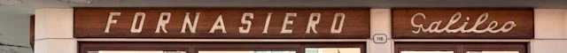
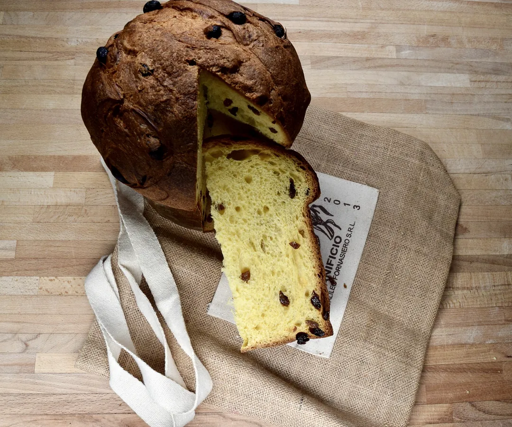
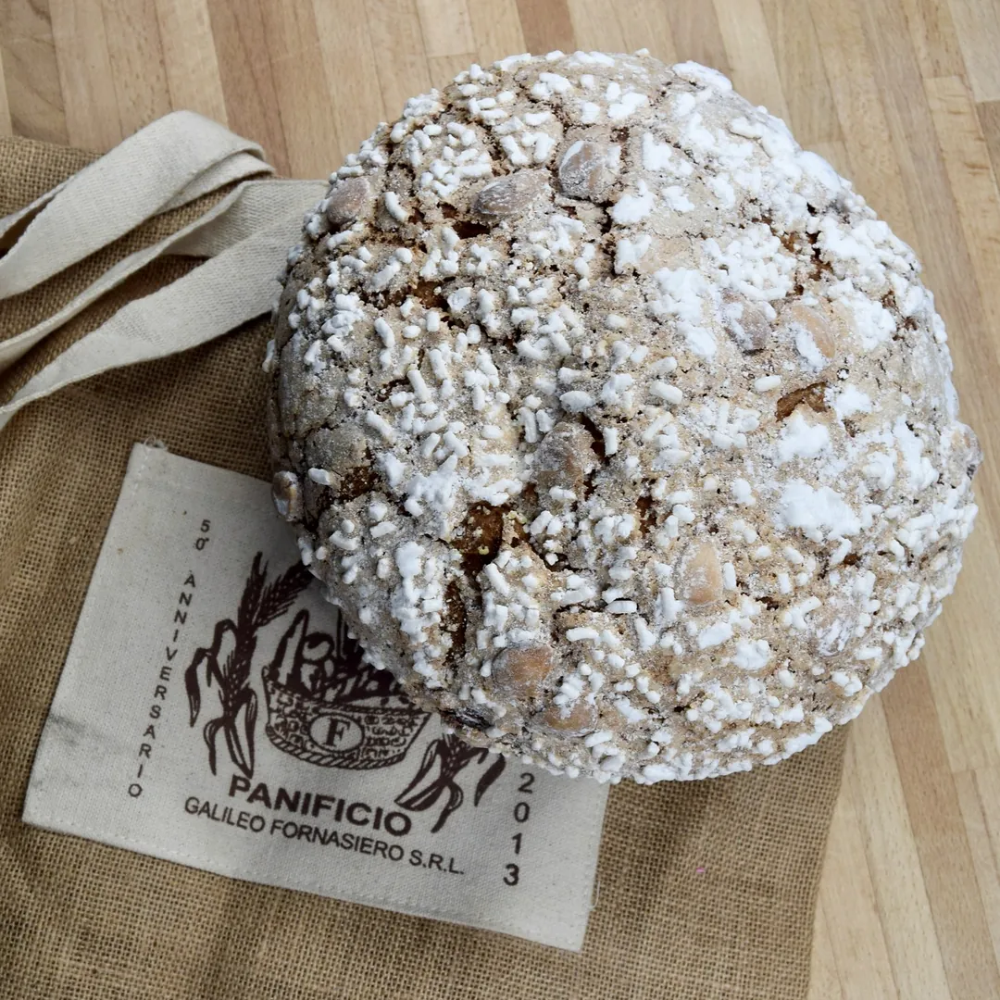

Via Vigonovese 116
Laboratorio e negozio, 35127 Camin (Padova), a pochi metri dal semaforo.
| Lunedì‑venerdì | 8.30‑13.45 e 16.30‑20.00 |
|---|---|
| Mercoledì | pomeriggio chiuso |
| Sabato | chiedete al telefono |
| Domenica | chiedete al telefono |
Panificio a Camin, Padova, dal 1963

Pane, pasta fresca, pizze, focacce e dolci dal nostro laboratorio di via Vigonovese.
Aperti dal lunedì al venerdì, mattina e pomeriggio. Il sabato mattina in via Alsazia 3.

Lunedì‑venerdì 8.30‑13.45 e 16.30‑20.00
Mercoledì pomeriggio chiuso.Sabato: chiamate.
Lunedì‑venerdì 8.30‑13.45 e 16.30‑19.30
Mercoledì pomeriggio aperto.Sabato 8.30‑13.30. Cellulare 338 660 06 64
Su prenotazioneNatale e Pasquapanettone, colomba e focacce si prenotano in negozio o al telefono.
La storia della mia famiglia è una storia di pane buono, di profumo, di ricerca.
Chi siamo
Galileo Fornasiero è arrivato a Camin il primo aprile del 1963. Fidalma è al banco da sessant'anni.
Non abbandonerei mai Camin, qui è la mia famiglia, il mio mondo, il mio lavoro.
Hanno scritto di noi
Gnocchi, tagliatelle, tagliolini e bigoli. Farina, uova e tanto amore sono i tre ingredienti.
Pizze margherita, prosciutto e funghi, quattro stagioni, porcini e grana, o con i gusti che chiedete voi. Focacce alle olive, alle cipolle, con pomodoro, stracchino e olive, con patate, rosmarino e mozzarella. E panini imbottiti con gli affettati.
Si trovano al banco: orari →Crostate di marmellata (ciliegie, albicocca, frutti di bosco) o crema al limone, con ricotta e cioccolato, con crema di mandorle. Torta alle carote, plumcake allo yogurt, pan di Spagna con le mele.
La Bacheca di Romina →Oltre 30 tipologie di pane, fatte ogni giorno nel nostro laboratorio di via Vigonovese e portate nei due negozi.
I pani con il nome di casa
E ogni giorno
In tutto sono oltre 30 tipi: per gli altri chiedete al banco.
Panettone e focaccia di Natale, con l'antica ricetta di Galileo Fornasiero. A Pasqua colomba e focaccia. Si prenotano in negozio o al telefono, al 049 870 26 58.
Le focacce, dice Fidalma, sono preparate come 50 anni fa
.
Pezzature, prezzi e ultimo giorno utile: chiedete al banco o al telefono.

con l'antica ricetta di Galileo

la focaccia veneta, con la glassa e le mandorle
Laboratorio e negozio, 35127 Camin (Padova), a pochi metri dal semaforo.
| Lunedì‑venerdì | 8.30‑13.45 e 16.30‑20.00 |
|---|---|
| Mercoledì | pomeriggio chiuso |
| Sabato | chiedete al telefono |
| Domenica | chiedete al telefono |
Negozio, 35127 Camin (Padova).
| Lunedì‑venerdì | 8.30‑13.45 e 16.30‑19.30 |
|---|---|
| Sabato | 8.30‑13.30 |
| Domenica | chiedete al telefono |
Siamo specializzati nella fornitura di pane per alberghi, bar, ristoranti e rivendite.
Anche per le famiglie offriamo consegne a domicilio in zona Camin e dintorni.
Per i locali, chiamate il laboratorio per sapere se arriviamo fino a voi, in che giorni e a che ora.
Per decenni il pane agli operai di
Galileo e Fidalma al Mattino di Padova, marzo 2023
Il laboratorio, via Vigonovese 116
049 870 26 58Oppure scrivete a info@panificiogalileofornasiero.it, oggetto: Fornitura pane.